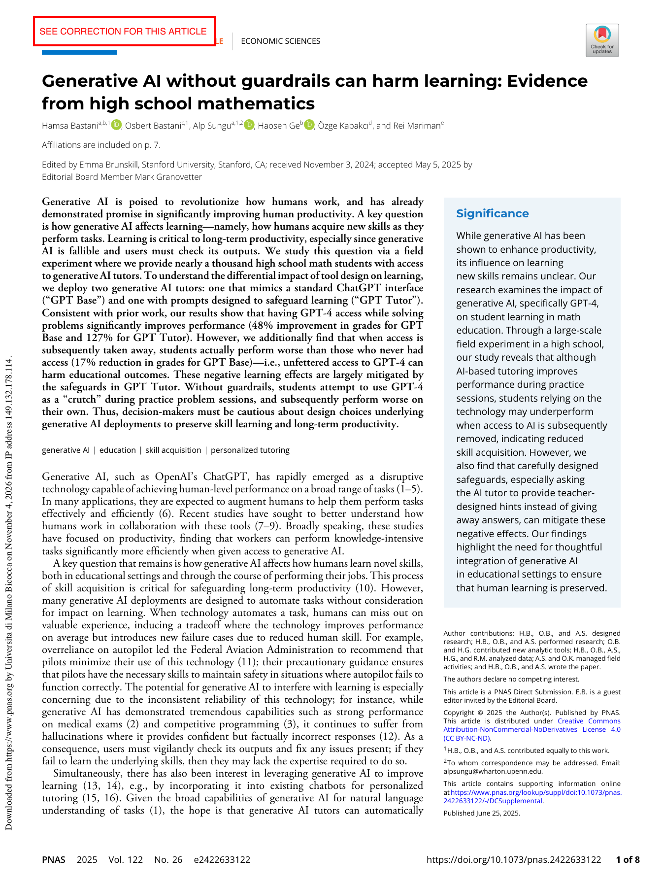
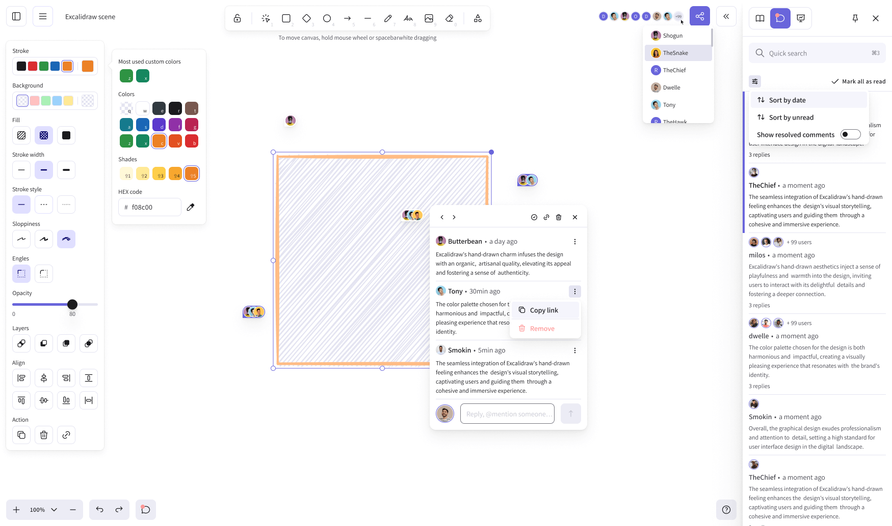
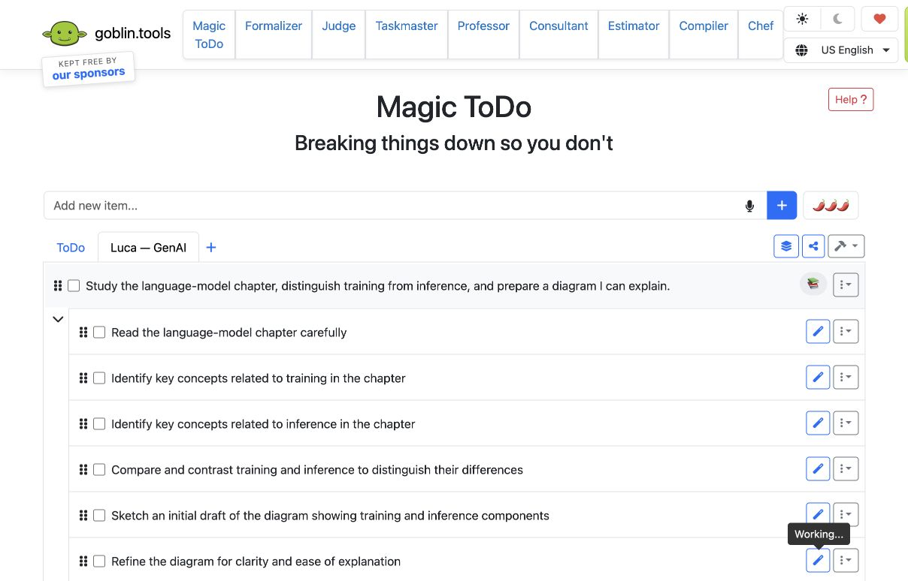
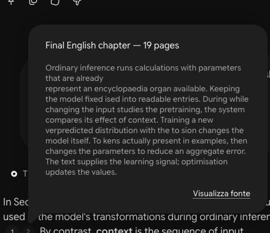
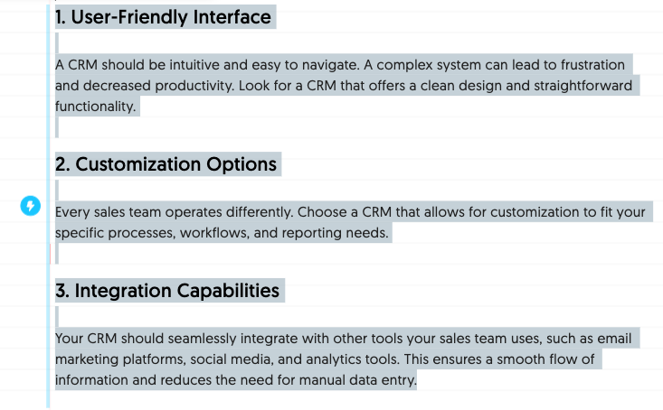
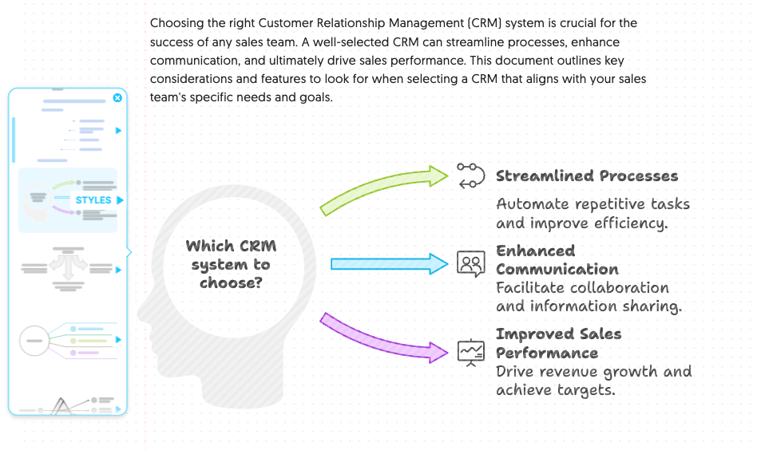
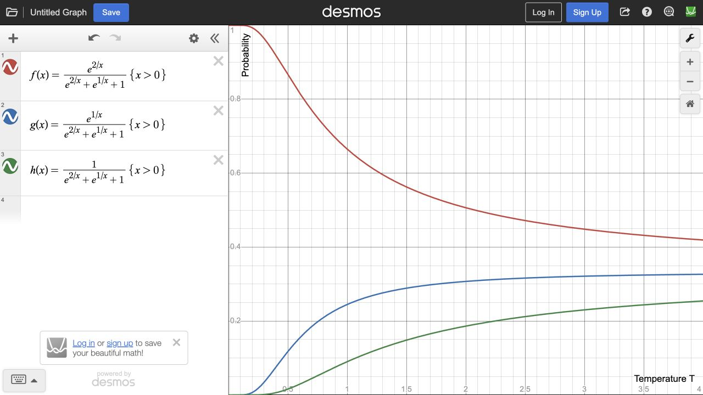
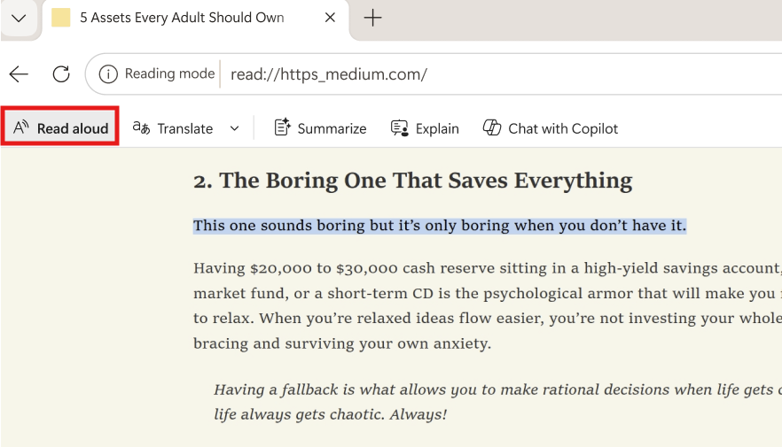

Beyond prompting
Slide 1 · opening
Visual tools for self-directed learning with artificial intelligence
Marco Cremaschi
Slide 2 · opening
Tenure-track Assistant Professor
University of Milano-Bicocca
Semantic AI and knowledge graphs
Digital mental health
Applied data systems
Cremaschi, M. Personal portfolio and researcher profile. Consulted 1 November 2026. — Self-authored biographical source; not evidence of learning effectiveness. Dynamic publication and project totals are not reproduced.
Marco Cremaschi — University of Milano-Bicocca institutional profile
Whattadata
Slide 3 · opening
A spin-off of the University of Milano-Bicocca
Predictive analytics
Machine learning models for decisions informed by data
Responsible AI
Design informed by people, evidence and system limitations
Modular solutions
Components integrated into existing processes
Whattadata (2026, consultato il 31 ottobre). Sito ufficiale: AI, machine learning and data analytics. — Fonte aziendale per descrivere attività e approccio dichiarati; non prova indipendente di efficacia, sicurezza o conformità.
Università degli Studi di Milano-Bicocca (2026). Spin-off e start-up area ICT/Web: Whattadata S.r.l. — La qualifica spin-off non documenta una partecipazione azionaria dell’ateneo né valida risultati didattici o clinici.
From curiosity to classroom practice
Slide 4 · opening
11 November 2026 · EDU Forum · 15:45–17:15 · Hall 210
Who is it for?
Education researchers, teachers, school leaders, doctoral students and policymakers interested in self-directed learning, online and in blended settings.
What will we do?
Use classroom scenarios, learning-path maps and reflective prompts. Examine goals, planning, information organisation, feedback and self-assessment.
What will you take away?
Adaptable strategies and visual scaffolds for autonomy, critical thinking, emotional awareness and digital responsibility.
EDU Forum 2026 — Forumo programa 10-02.pdf (2026). Brief della sessione di Marco Cremaschi. — Descrizione programmata dell’evento; non è una prova di efficacia didattica.
A visual path for learning with AI
Slide 5 · opening
10 November 2026 · Mykolas Romeris University · Room III-326
Who is it for?
University students and teachers. Make initial knowledge and decisions about learning visible.
What will we do?
Set a goal, map what we know, plan next steps and check AI suggestions against reliable sources. Use concept maps, reflection and self-assessment.
What will you take away?
A reusable activity template and practical tasks for autonomy, critical thinking, uncertainty and managing frustration.
Public lecture workshop 10 November 2026 — LT/EN (2026). Brief della sessione di Marco Cremaschi. — Descrizione programmata dell’evento; non è una prova di efficacia didattica.
Visual tools for learning with AI
Slide 6 · opening
13 November 2026 · Teacher workshop · Druskininkai · 13:30–14:20
Who is it for?
Teachers across disciplines who want students to use AI while taking responsibility for their learning.
What will we do?
Build a visual path: goal, initial knowledge, next steps, source checks and reflection. Adapt concept maps and self-assessment to a subject.
What will you take away?
A reusable activity template and practical tasks, with attention to uncertainty, frustration, critical thinking and responsible AI use.
Workshop Program November 2026 — EN (2026). Brief della sessione di Marco Cremaschi. — Descrizione programmata dell’evento; non è una prova di efficacia didattica.
Follow along
Slide 7 · Presentation and materials
Scan the QR code to open the presentation.
Keep the slides and workshop materials at hand.
Who is this slide for?
Slide 8 · Icon legend
The icons in the top-right corner show who each slide is for.
For teachers
Teaching choices, activity design and assessment.
For students and teachers
Concepts, examples and study methods to share with students.
Andrea needs to understand GenAI
Slide 9 · Scenario
One student’s learning process, from assignment to assessment
Andrea is a second-year computer science student: he can program, but still confuses key concepts of generative models.
He must study a chapter and explain how a small application generates text.
We observe his use of tools and the evidence of understanding he keeps.
You are following the learning method; you do not need to learn programming.
The student’s assignment
Slide 10 · Scenario
Four connected products, with criteria shared before the task
- Read
Identify concepts, relationships and uncertainties in the chapter.
- Represent
Build a commented diagram of the model.
- Create
Use AI if needed to obtain a text-generation application.
- Explain
Predict a change and correct an error without delegating the answer.
A working solution is one product; an explanation provides different evidence.
What is self-directed learning?
Slide 11 · Learning method · self-directed learning
Self-directed learning is a process in which learners take the initiative to identify learning needs, set goals, choose resources and strategies, and evaluate outcomes.
1. Identify a goal
What do I need to learn, and what do I want to achieve?
2. Choose a path
Which resources, people and strategies will help me learn?
3. Evaluate progress
What have I learned, and what should I change? Self-assessment helps here.
Result
“I need to distinguish training from inference. I will use the chapter and a concept map, then check whether I can explain the difference.”
Teachers and peers can support the process; the learner takes responsibility for the choices.
National Library of Medicine. (n.d.). Self-Directed Learning as Topic (MeSH D000073819). Definition attributed to Knowles (1975), Self-directed learning: A guide for learners and teachers. New York: Association Press. — Conceptual definition, not an efficacy trial. Knowles’s definition was verified through the NLM entry; the full original book was not consulted. The three groups and Andrea’s example are workshop illustrations.
What is self-assessment?
Slide 12 · Learning method · self-assessment
Self-assessment means judging your own work and learning against explicit criteria, then using that judgment to improve.
1. Check the criteria
What should I be able to explain or do?
2. Look for evidence
What can I demonstrate? Where do I still struggle?
3. Choose a next step
What will I revise, practise or check again?
Result
“I can explain what a token is, but I still confuse training and inference. I will revise that link in my map and explain it again.”
AI can offer feedback; the learner checks the evidence and decides what to improve.
Andrade, H. L. (2019). A critical review of research on student self-assessment. Frontiers in Education, 4, 87. — Definition and review of 76 empirical studies; not validation of this workshop, its three-step illustration or AI feedback. Andrea’s example is a constructed teaching scenario.
Assisted performance and learning
Slide 13 · Why this learning path
One study separates what happens during and after assistance

High-school mathematics, nearly 1,000 students in one Turkish school; not a trial of these tools.
With AI assistance
In Bastani and colleagues’ trial, assisted practice performance improved.
Later, without AI
The general-chat group performed below the control; instructional safeguards largely mitigated that harm.
Workshop design choice: keep a brief independent assessment as well.
Bastani, H., Bastani, O., Sungu, A., Ge, H., Kabakcı, Ö., & Mariman, R. (2025). Generative AI without guardrails can harm learning: Evidence from high school mathematics. Proceedings of the National Academy of Sciences, 122(26), e2422633122. — RCT in high-school mathematics at one Turkish school, with nearly 1,000 students. Separates assisted practice from subsequent unassisted tests; does not evaluate this workshop or these commercial tools.
The assigned book
Slide 14 · Scenario · material
Marco Cremaschi · Foundations of Generative Artificial Intelligence
Topic: Language Models and Basic Architecture.
A fictional book created for this workshop, with accurate content and real technical sources.
The book is available as a PDF.
What can ChatGPT do?
Slide 15 · ChatGPT · possibilities for learning
Turn a topic into materials for understanding, practice and revision.
Maps · Explanations · Revision · Practice
Conversazione ChatGPT condivisa dall’utente: Comandi per studenti. Catalogo di 79 scorciatoie informali per prompt, consultato il 4 novembre 2026. — Informal prompt shortcuts, not official commands or guaranteed features; accompany each with explicit instructions.
Starter shortcuts · 1/3
Slide 16 · ChatGPT · prompt catalogue · 1/8
Maps and visual study materials
| Command | What you can ask for |
|---|---|
/mindmap | Visual mind map |
/flashcard | Question-and-answer revision cards |
/blackboard | Illustrated blackboard with explanations |
/whiteboard | Whiteboard outline |
/sketchnote | Visual notes with drawings and arrows |
/infographic | Educational infographic |
/flowchart | Flowchart |
/timeline | Timeline |
/venn | Diagram comparing concepts |
Informal shortcuts: add the topic, learner level and instructions for the output.
Conversazione ChatGPT condivisa dall’utente: Comandi per studenti. Catalogo di 79 scorciatoie informali per prompt, consultato il 4 novembre 2026. — Informal prompt shortcuts, not official commands or guaranteed features; accompany each with explicit instructions.
Starter shortcuts · 2/3
Slide 17 · ChatGPT · prompt catalogue · 2/8
Explain, summarise and check understanding
| Command | What you can ask for |
|---|---|
/comic | Educational comic |
/summary | Structured summary |
/blueprint | Complete outline of a topic |
/eli5 | Very simple explanation |
/feynman | Check understanding by explaining a concept |
/analogy | Explanation through analogies |
/glossary | Glossary of key terms |
/quiz | Interactive quiz |
Informal shortcuts: add the topic, learner level and instructions for the output.
Conversazione ChatGPT condivisa dall’utente: Comandi per studenti. Catalogo di 79 scorciatoie informali per prompt, consultato il 4 novembre 2026. — Informal prompt shortcuts, not official commands or guaranteed features; accompany each with explicit instructions.
Starter shortcuts · 3/3
Slide 18 · ChatGPT · prompt catalogue · 3/8
Exams, active recall and study organisation
| Command | What you can ask for |
|---|---|
/multiplechoice | Multiple-choice questions |
/oral | Mock oral exam |
/exam | Mock written exam |
/recall | Active recall exercises |
/spacedrepetition | Spaced revision plan |
/studyplan | Personalised study plan |
/pomodoro | Structured study sessions |
/checklist | Checklist of topics to master |
Informal shortcuts: add the topic, learner level and instructions for the output.
Conversazione ChatGPT condivisa dall’utente: Comandi per studenti. Catalogo di 79 scorciatoie informali per prompt, consultato il 4 novembre 2026. — Informal prompt shortcuts, not official commands or guaranteed features; accompany each with explicit instructions.
Maps, diagrams and visual representations
Slide 19 · ChatGPT · prompt catalogue · 4/8
More ways to represent a topic
| Command | What you can ask for |
|---|---|
/conceptmap | Concept map with explicit relationships |
/fishbone | Cause-and-effect fishbone diagram |
/iceberg | Iceberg diagram of visible and hidden concepts |
/pyramid | Hierarchical pyramid |
/tree | Classification tree |
/cyclediagram | Diagram of a cyclical process |
/anatomydiagram | Illustration of an object’s or organism’s parts |
/explodedview | Exploded view of a complex system |
/handwritten | Illustrated handwritten-style notes |
/onepager | One-page overview of a topic |
/decisionmatrix | Comparison matrix for making decisions |
/labeleddiagram | Illustrated diagram with labels |
Informal shortcuts: add the topic, learner level and instructions for the output.
Conversazione ChatGPT condivisa dall’utente: Comandi per studenti. Catalogo di 79 scorciatoie informali per prompt, consultato il 4 novembre 2026. — Informal prompt shortcuts, not official commands or guaranteed features; accompany each with explicit instructions.
Memory and revision
Slide 20 · ChatGPT · prompt catalogue · 5/8
Associations, summaries and gaps to address
| Command | What you can ask for |
|---|---|
/memorypalaceimage | Illustrated memory palace |
/mnemonic | Mnemonic techniques |
/mnemonicart | Illustrations to help remember information |
/memoryhooks | Memorable mental associations |
/picturemnemonics | Concepts associated with images |
/emojisummary | Visual summary using emoji |
/visualvocab | Vocabulary with images and definitions |
/cheatsheet | Quick reference sheet |
/gapfinder | Identify gaps in preparation |
/mistakelog | Record of mistakes to revisit |
Informal shortcuts: add the topic, learner level and instructions for the output.
Conversazione ChatGPT condivisa dall’utente: Comandi per studenti. Catalogo di 79 scorciatoie informali per prompt, consultato il 4 novembre 2026. — Informal prompt shortcuts, not official commands or guaranteed features; accompany each with explicit instructions.
Games and interactive exercises
Slide 21 · ChatGPT · prompt catalogue · 6/8
Activities in chat; clickable versions depend on the tools available
| Command | What you can ask for |
|---|---|
/quizgame | Points-based quiz |
/matchinggame | Match concepts with definitions |
/memorygame | Matching-pairs memory game |
/jeopardy | Category-based question game with scoring |
/millionaire | Quiz with increasing difficulty |
/crossword | Educational crossword |
/fillintheblanks | Fill-in-the-blank exercises |
/sortinggame | Classification game |
/conceptquiz | Adaptive quiz on concepts |
/languagedrill | Interactive language exercises |
Informal shortcuts: add the topic, learner level and instructions for the output.
Conversazione ChatGPT condivisa dall’utente: Comandi per studenti. Catalogo di 79 scorciatoie informali per prompt, consultato il 4 novembre 2026. — Informal prompt shortcuts, not official commands or guaranteed features; accompany each with explicit instructions.
Understanding and deeper learning
Slide 22 · ChatGPT · prompt catalogue · 7/8
Examples, questions and connections to build understanding
| Command | What you can ask for |
|---|---|
/deepdive | Advanced exploration of a topic |
/stepbystep | Step-by-step explanation |
/workedexample | Fully worked example |
/twinexample | Worked example followed by a similar exercise |
/socraticmode | Socratic dialogue |
/commonwrong | Common conceptual mistakes |
/realworld | Real-world applications |
/connectit | Connections to prior knowledge |
/caseStudy | Case study |
/sourceanalysis | Critical analysis of a source |
Informal shortcuts: add the topic, learner level and instructions for the output.
Conversazione ChatGPT condivisa dall’utente: Comandi per studenti. Catalogo di 79 scorciatoie informali per prompt, consultato il 4 novembre 2026. — Informal prompt shortcuts, not official commands or guaranteed features; accompany each with explicit instructions.
Shortcuts for teachers
Slide 23 · ChatGPT · prompt catalogue · 8/8
From lesson planning to assessment
| Command | What you can ask for |
|---|---|
/lessonplan | Lesson plan |
/learningobjectives | Learning objectives |
/rubric | Assessment rubric |
/questionbank | Question bank |
/bloomquestions | Questions based on Bloom’s taxonomy |
/exitTicket | Brief end-of-lesson check |
/flippedclassroom | Flipped classroom activities |
/peerassessment | Peer assessment |
/differentiate | Adaptation to different learner levels |
/worksheet | Exercise worksheets |
/slides | Content organised into slides |
/learningstations | Learning station activities |
Informal shortcuts: add the topic, learner level and instructions for the output.
Conversazione ChatGPT condivisa dall’utente: Comandi per studenti. Catalogo di 79 scorciatoie informali per prompt, consultato il 4 novembre 2026. — Informal prompt shortcuts, not official commands or guaranteed features; accompany each with explicit instructions.
The first reading difficulty
Slide 24 · Learner · identify uncertainty
Andrea recognises the words, but cannot yet connect them
Chapter concept · paraphraseDuring inference, parameters remain fixed. Context enters the representation calculations and changes the next-token distribution.
Andrea wonders: “If changing the text changes the answer, is the model learning again?”
Turn “I do not understand” into a precise distinction: parameters and context.
Qwen Team. (2024). Qwen2.5-0.5B-Instruct: Model card. Hugging Face. — Small model with limited answer quality. ONNX quantisation affects precision and runtime requirements.
Hugging Face. (2025). Transformers.js v3.8.1: Using quantized models (dtypes). — Documented Qwen ONNX q4 example. Runtime performance depends on browser, device and configuration.
Excalidraw: an initial map
Slide 25 · Learner · represent
Before asking AI, Andrea records what he currently thinks

- Open the canvas
Use the free editor, with no account required.
- Add four concepts
Training data, model, context, response.
- Connect and label
Write the relationship on each arrow; add “?” where uncertain.
Result
An initial representation to keep, even when it contains errors.
Excalidraw. (2026). Free whiteboard and Excalidraw Plus. — Free editor without an account; Plus and temporary trials are distinct from the free editor.
Novak, J. D., & Cañas, A. J. (2008). The theory underlying concept maps and how to construct and use them. Technical Report IHMC CmapTools 2006-01, Rev. 01-2008. Florida Institute for Human and Machine Cognition. — Theoretical and practical technical report; not an efficacy trial of Excalidraw or AI-generated diagrams.
Uncertain relationships in the first map
Slide 26 · Learner · represent
A constructed teaching example for Andrea’s case
Andrea chooses two points to investigate, rather than asking for an explanation of the whole chapter.
Relationship to check
Context → “trains again?” → model.
An incomplete relationship
Model → “produces” → response, without describing tokens.
Uncertainties in the map become goals in the study plan.
Novak, J. D., & Cañas, A. J. (2008). The theory underlying concept maps and how to construct and use them. Technical Report IHMC CmapTools 2006-01, Rev. 01-2008. Florida Institute for Human and Machine Cognition. — Theoretical and practical technical report; not an efficacy trial of Excalidraw or AI-generated diagrams.
Goblin.tools: a concrete goal
Slide 27 · Learner · plan
Magic ToDo breaks down a task that feels too large

Prompt / excerptStudy the language-model chapter, distinguish training from inference, and prepare a diagram that I can explain.
- Enter the task
Name the intended outcome, rather than only “study GenAI”.
- Break it down
Use the breakdown command and review the suggested subtasks.
Goblin Tools. (2026). About Goblin Tools. — Core web tools are free; mobile apps and some Pro features are paid. Suggestions are not diagnostic measurements.
Goblin Tools. (2026). Magic ToDo. — Granularity and output depend on the task; review the generated plan.
Adjust the level of detail
Slide 28 · Learner · plan
Extra steps help when they clarify the next action
- Adjust the breakdown
Add detail to the step that is blocking progress.
- Review the suggestion
Remove repetition and tasks outside the assignment.
Too broad
“Understand the architecture” does not specify where to start.
Actionable
“Read the token paragraph and write a two-line example”.
Adjust granularity to the perceived difficulty; it is not a diagnostic measure.
Goblin Tools. (2026). Magic ToDo. — Granularity and output depend on the task; review the generated plan.
Andrea’s selected plan
Slide 29 · Learner · plan
Every block ends with something he can check
- Read and annotate
Record three terms and one uncertain relationship.
- Ask and verify
Check one explanation against the chapter.
- Reconstruct
Revise the diagram and explain it with the chat closed.
- Apply
Use the app, predict a change and compare the outcome.
Checked boxes record activity; the content of the products provides evidence of understanding.
Activity: choose the next support
Slide 30 · Audience · activity 1
Five minutes on the method; no GenAI knowledge required
- Read the case · 1 minute
Andrea has twenty subtasks but cannot decide which to start.
- Decide in pairs · 2 minutes
Reduce the plan to three actions and add one check of understanding.
- Share · 2 minutes
Name your selection criterion and one decision you would leave to Andrea.
A justified support choice that can transfer to another subject.
Notebook: upload the chapter
Slide 31 · Learner · understand
Start the conversation with an identifiable source
- Create a notebook
Give it a clear name: “GenAI · chapter and study”.
- Add a source
Upload the chapter PDF and check the imported title and content.
- Select the material
For this first question, use only the chapter.
Result
A study environment with the assigned material as its reference.
Google. (2026). Use chat in Gemini Notebook. — Select sources and focus the request. A citation does not guarantee correctness. The product also offers agentic features outside this demonstration.
Google. (2026). Learn about Gemini Notebook’s plans; Manage your Gemini Notebook usage limits. — Standard access is free with an account and variable usage limits. Education eligibility depends on the actual licence.
Ask a focused question
Slide 32 · Learner · understand
Use an uncertainty from the map as the conversation input
Prompt / excerptUse only the chapter. Explain the difference between learned parameters and context during inference. Identify the relevant passage. If the text is insufficient, say so.
The need is to understand why an answer can change without retraining.
A precise request enables a precise source check.
Google. (2026). Use chat in Gemini Notebook. — Select sources and focus the request. A citation does not guarantee correctness. The product also offers agentic features outside this demonstration.
Open the citation and read its context
Slide 33 · Learner · verify
The number beside an answer is the start of checking

- Open the reference
Select the citation about parameters.
- Check the original
Columns are interleaved here. Open the chapter HTML.
- Compare the wording
Does “during inference” survive, or become “always”?
Keep the explanation after checking how it relates to the source.
Google. (2026). Use chat in Gemini Notebook. — Select sources and focus the request. A citation does not guarantee correctness. The product also offers agentic features outside this demonstration.
Request a graduated explanation
Slide 34 · Learner · understand
One concept at a time, followed by a question for Andrea
Prompt / excerptExplain context in three short steps: definition, example, limitation of the example. Preserve the distinction from parameters. Then ask me one question and wait for my answer.
Result
A segmented explanation to check against the text, followed by the learner’s own attempt.
If the first step remains unclear, investigate it before adding detail.
Google. (2026). Use chat in Gemini Notebook. — Select sources and focus the request. A citation does not guarantee correctness. The product also offers agentic features outside this demonstration.
Check the analogy as well
Slide 35 · Learner · understand
A metaphor helps when its boundary remains visible
Back to the source: during ordinary inference, context enters the calculation and parameters are not updated.
A useful analogy
Context is like material available on a desk during a task.
A boundary to state
The model does not read as a person does; the analogy does not describe its internal calculation.
Andrea should be able to express the concept without the metaphor.
Qwen Team. (2024). Qwen2.5-0.5B-Instruct: Model card. Hugging Face. — Small model with limited answer quality. ONNX quantisation affects precision and runtime requirements.
Explore a generated Mind Map
Slide 36 · Learner · organise
Use it for orientation, then investigate one branch
- Generate a Mind Map
Open the result in the Studio panel on desktop.
- Expand one branch
Choose “inference” and inspect the associated concepts.
- Select a node
Ask a focused question, then check its reference to the chapter.
A topic tree provides orientation; its relationships still need explanation.
Google. (2026). Use Mind Maps in Gemini Notebook. — Generated branching summary, not automatically a concept map with meaningful propositions. Desktop feature with usage limits.
Novak, J. D., & Cañas, A. J. (2008). The theory underlying concept maps and how to construct and use them. Technical Report IHMC CmapTools 2006-01, Rev. 01-2008. Florida Institute for Human and Machine Cognition. — Theoretical and practical technical report; not an efficacy trial of Excalidraw or AI-generated diagrams.
Self-check before seeing the solution
Slide 37 · Learner · check
Close the source, attempt an answer, then reopen it to revise
Prompt / excerptAsk one question that distinguishes context from training. Do not reveal the answer immediately. After my attempt, identify one correct point and one to revise, with a chapter reference.
Andrea answers before reading a solution, then checks and records a correction.
A generated quiz is useful when it leads to an attempt and revision.
Google. (2026). Generate Flashcards or Quizzes in Gemini Notebook. — Generated questions and explanations need checking; learner self-checks differ from teacher collection and analysis.
Karpicke, J. D., & Blunt, J. R. (2011). Retrieval practice produces more learning than elaborative studying with concept mapping. Science, 331(6018), 772–775. — Experiments with science texts and specific study conditions. Does not show that concept maps are useless or every generated quiz constitutes effective retrieval practice.
Excalidraw: revise the relationships
Slide 38 · Learner · reconstruct
The second map makes the conceptual change visible
- Training
Data → “contributes to updating” → parameters.
- Inference
Context → “enters calculation with fixed parameters” → probabilities.
- Generation
Distribution → “guides selection of” → next token.
Read every arrow as a meaningful statement.
Novak, J. D., & Cañas, A. J. (2008). The theory underlying concept maps and how to construct and use them. Technical Report IHMC CmapTools 2006-01, Rev. 01-2008. Florida Institute for Human and Machine Cognition. — Theoretical and practical technical report; not an efficacy trial of Excalidraw or AI-generated diagrams.
Qwen Team. (2024). Qwen2.5-0.5B-Instruct: Model card. Hugging Face. — Small model with limited answer quality. ONNX quantisation affects precision and runtime requirements.
Compare the two map versions
Slide 39 · Learner · reflect
The important change is in the explanation
Andrea identifies one correct relationship, one revision and one remaining uncertainty.
Before · teaching example
“Does context train the model again?”
After · expected explanation
“During inference, the calculation input changes without updating parameters”.
The comparison prepares an independent explanation; it does not replace it.
Napkin: start with checked text
Slide 40 · Learner · summarise
Choose the relationships before generating the visual

Prompt / excerptTraining updates parameters. During inference, the context text becomes a token sequence. The model calculates probabilities for the next token. A selection rule chooses a token and the process repeats.
- Paste the text
Use a summary checked against the chapter.
- Select and generate
Request a visual for that specific passage.
Napkin proposes a representation; it does not certify the text.
Napkin AI. (2026). Visuals generation. — Visual choice and represented relationships require human review.
Choose and correct the visual
Slide 41 · Learner · summarise
Prefer a representation that preserves the meaning

- Review labels and arrows
Correct terms before choosing colours or icons.
- Justify the choice
Explain why this representation expresses the process.
Avoid
One arrow labelled “prompt → training → answer” mixes different processes.
Look for
Separate training; show a cycle for token-by-token inference.
Napkin AI. (2026). Visuals generation. — Visual choice and represented relationships require human review.
A diagram to use during the exercise
Slide 42 · Learner · summarise
A short reference with explicit relationships
- Text and context
Are converted into tokens.
- Model with fixed parameters
Processes the tokens and calculates a distribution.
- Selection and repetition
A token is added; the context for the next step changes.
Result
Export as PNG/PDF in the Free plan, keeping product branding.
The learner must be able to explain the cycle in their own words.
Napkin AI. (2026). Pricing. — Free: 500 credits/week and branded PNG/PDF export. SVG/PPT export is paid.
Hugging Face. (2025). Transformers.js v3.8.1: Using quantized models (dtypes). — Documented Qwen ONNX q4 example. Runtime performance depends on browser, device and configuration.
The exercise: a small app with a real model
Slide 43 · Learner · apply
AI may write the solution; Andrea must be able to interpret it
Enter text and inspect its tokens.
Show five next-token alternatives, probabilities and remaining mass.
Change temperature and generate a short continuation.
Compare two tests and explain a difference.
A real model in the browser, with no paid API.
Qwen Team. (2024). Qwen2.5-0.5B-Instruct: Model card. Hugging Face. — Small model with limited answer quality. ONNX quantisation affects precision and runtime requirements.
Hugging Face. (2025). Transformers.js v3.8.1: Using quantized models (dtypes). — Documented Qwen ONNX q4 example. Runtime performance depends on browser, device and configuration.
Claude: a complete assignment
Slide 44 · Learner · obtain a solution
Specify material, behaviour and checks before generating code
Prompt / excerptCreate an English browser app using a real language model, without a paid API. Use Transformers.js and ONNX Qwen2.5-0.5B-Instruct q4. Show input tokens, five next-token alternatives with probabilities and remaining mass, temperature, and generation up to 24 tokens. Add comparison, reset, loading and error states. Distinguish the explanatory diagram from real data. Explain dependencies, limitations and checks. Use the attached chapter as the conceptual reference.
A reusable teaching request, not the production log of the distributed code.
A complete prompt defines the task; the solution still needs verification.
Anthropic. (2026). Claude pricing. — Free includes Artifacts with usage limits. Does not establish that Claude produced the code distributed in this workshop.
Hugging Face. (2025). Transformers.js v3.8.1: Using quantized models (dtypes). — Documented Qwen ONNX q4 example. Runtime performance depends on browser, device and configuration.
Open and check the solution
Slide 45 · Learner · check the solution
A ready interface begins the study of the exercise
Kit provenance: application developed with Codex. The Claude prompt lets you repeat the task.
- Run it
Load the model and actually generate a token.
- Check the data
Probabilities use the full vocabulary; show the remaining mass.
- Keep the revisions
Record corrections, runtime and model version.
A plausible result does not replace a functioning test.
Hugging Face. (2025). Transformers.js v3.8.1: Using quantized models (dtypes). — Documented Qwen ONNX q4 example. Runtime performance depends on browser, device and configuration.
A designed tutor can support learning
Slide 46 · Why guided use matters
Positive findings concern specific tasks and conditions
Designed tutor · Kestin 2025
An RCT with 194 university physics students found better immediate outcomes with the studied tutor than the comparison active class.
Guided use · Huang 2026
With 95 students, structured training improved AI-assisted revision of electromagnetism problems.
Workshop choice: ask for attempts, source checks and revision; then assess independence.
Kestin, G., Miller, K., Klales, A., Milbourne, T., & Ponti, G. (2025). AI tutoring outperforms in-class active learning: An RCT introducing a novel research-based design in an authentic educational setting. Scientific Reports, 15, 17458. — 194 eligible university physics students; tutor designed for specific lessons and immediate tests. Does not establish universal or long-term chatbot effectiveness.
Huang, B., Xie, L., Liu, Y., Liu, X., Tang, H., Feng, X., Qiao, C., Guo, Q., Wu, C., & Bao, L. (2026). From answer machine to collaborative partner: Impact of structured generative AI training on scientific problem solving in STEM education. International Journal of STEM Education, 13, 62. — 95 students; immediate AI-assisted revision of electromagnetism questions after structured training. Does not establish durable independent learning.
From input to the first token
Slide 47 · Learner · observe
Observe real data in a short test
- Enter the text
Use a short input and record it.
- Read the tokens
Inspect the actual segmentation: tokens do not necessarily match words.
- Calculate and generate
Compare alternatives and remaining mass, then generate a single token.
Percentages concern token selection; they do not measure a statement’s truth.
Video transcript
REAL RECORDING — local inference Qwen2.5-0.5B-Instruct q4 00:00:00.000 I load the real model from this computer. No remote API is used. 00:00:04.366 I analyze the starting text. Tokens and probabilities come from the model. 00:00:07.695 I save A, then change only temperature, from 0.8 to 1.5. 00:00:10.206 Probabilities spread out; the most likely token keeps its top rank. 00:00:12.700 Now I change context: France instead of Italy. Temperature returns to 0.8. 00:00:16.153 I sample one token from the full vocabulary. The generated text joins the context. 00:00:19.308 I generate a short continuation. I can stop subsequent steps. 00:00:24.959 I reset the results. The model stays loaded in memory. 00:00:27.394 Real recording. High probability does not mean a true fact.
Qwen Team. (2024). Qwen2.5-0.5B-Instruct: Model card. Hugging Face. — Small model with limited answer quality. ONNX quantisation affects precision and runtime requirements.
Hugging Face. (2025). Transformers.js v3.8.1: Using quantized models (dtypes). — Documented Qwen ONNX q4 example. Runtime performance depends on browser, device and configuration.
The process represented by the app
Slide 48 · Learner · explain
An explanatory diagram, separate from the calculated values
- Input and tokens
Text is encoded as a sequence.
- Representations and position
Numbers and order information enter the model’s blocks.
- Transformer blocks
Causal attention and transformations process the available information.
- Distribution and selection
Scores become probabilities; selection adds the next token.
This diagram explains a flow; it does not reveal the model’s thoughts.
Vaswani, A., Shazeer, N., Parmar, N., Uszkoreit, J., Jones, L., Gomez, A. N., Kaiser, Ł., & Polosukhin, I. (2017). Attention is all you need. Advances in Neural Information Processing Systems, 30. — Original encoder–decoder architecture; the workshop demo uses a later causal decoder.
Qwen Team. (2024). Qwen2.5-0.5B-Instruct: Model card. Hugging Face. — Small model with limited answer quality. ONNX quantisation affects precision and runtime requirements.
Change the context, keep the model
Slide 49 · Learner · predict
A recorded comparison with the same model and temperature
Recorded local inference, 1 November 2026. Only the initial context changes.
Context A · T = 0.8
“The capital of Italy is” → next-token candidate “ Rome”: 44.86%.
Context B · T = 0.8
“The capital of France is” → next-token candidate “ Paris”: 91.23%.
These are conditional token probabilities, not factual-accuracy percentages.
Qwen Team. (2024). Qwen2.5-0.5B-Instruct: Model card. Hugging Face. — Small model with limited answer quality. ONNX quantisation affects precision and runtime requirements.
Temperature changes the distribution
Slide 50 · Learner · predict
Recorded run · identical input and logits, two temperature settings
Input: “The capital of Italy is”. Qwen2.5-0.5B-Instruct ONNX q4; local CPU/WASM run.
T = 0.8 · more concentrated
“ Rome”: 44.86%; remaining vocabulary outside the top five: 26.51%.
T = 1.5 · less concentrated
“ Rome”: 8.06%; remaining vocabulary outside the top five: 79.96%.
Temperature changes this distribution; it adds no knowledge and does not guarantee truth.
Hugging Face. (2025). Transformers.js v3.8.1: Using quantized models (dtypes). — Documented Qwen ONNX q4 example. Runtime performance depends on browser, device and configuration.
Polo Club of Data Science. (2026). Transformer Explainer. — Complementary resource with a different model and settings from the workshop demo.
Read the formula from the chapter
Slide 51 · Learner · understand a formula
Softmax with temperature · identify the role of each symbol
Exponentiate each score divided by temperature, then divide by the sum over all candidates.
- zᵢ · score
A number calculated by the model for candidate token i.
- T · temperature
A positive setting that rescales scores before conversion.
- pᵢ · probability
The exponentiated score divided by the sum over all candidates.
The denominator makes the probabilities sum to one. Probability is not truth.
Hugging Face. (2025). Transformers.js v3.8.1: Using quantized models (dtypes). — Documented Qwen ONNX q4 example. Runtime performance depends on browser, device and configuration.
Qwen Team. (2024). Qwen2.5-0.5B-Instruct: Model card. Hugging Face. — Small model with limited answer quality. ONNX quantisation affects precision and runtime requirements.
A short symbol guide
Slide 52 · Learner · read mathematical notation
Read the notation before asking for another explanation
- i and j · candidates
i identifies the candidate being considered; j runs over all candidates in the denominator.
- exp(a) · a positive weight
This means e raised to a. Apply it to each score divided by the positive temperature.
- Σ · add the weights
Sum all candidate weights, then divide each weight by this common total.
The three-candidate example shows the same arithmetic on a deliberately small vocabulary.
Hugging Face. (2025). Transformers.js v3.8.1: Using quantized models (dtypes). — Documented Qwen ONNX q4 example. Runtime performance depends on browser, device and configuration.
Notebook: ask about the formula
Slide 53 · Learner · understand a formula
Explain the symbols, check the source, then make a prediction
Prompt / excerptUse the chapter’s softmax-with-temperature formula. Explain each symbol and the denominator in three short steps. Distinguish a score from a probability. Work through scores [2, 1, 0] at T = 1 and show the sum. Then ask me to predict the effect of increasing T, and wait for my answer.
Check the cited passage and the arithmetic; an explanation generated by AI still needs review.
Google. (2026). Use chat in Gemini Notebook. — Select sources and focus the request. A citation does not guarantee correctness. The product also offers agentic features outside this demonstration.
Desmos: make the formula observable
Slide 54 · Learner · explore a formula
Three invented scores for a worked example, separate from the real model

- Open the free calculator
Use the copy-ready expressions in the kit. Here x is temperature T > 0.
- Compare fixed scores
Read the three curves at x = 0.5, 1 and 2. Change temperature while keeping scores [2, 1, 0].
Desmos plots and evaluates the entered mathematics; it does not explain the chapter automatically.
Desmos Studio. (2026). Desmos Graphing Calculator User Guide. — Free graphing calculator; no login is needed to use it. An account is needed to save graphs. It evaluates and plots entered expressions; it does not itself provide a source-grounded explanation of the chapter.
Desmos Studio. (2026). Sliders and movable points in a graph. — Sliders adjust graph parameters; mathematical domain restrictions still matter.
Check the worked example numerically
Slide 55 · Learner · verify a formula
Fixed scores [2, 1, 0] · probabilities rounded to four decimals
Before rounding, each distribution sums to 1. Higher T makes these fixed-score probabilities less concentrated.
T = 0.5
p₁ = 0.8668 · p₂ = 0.1173 · p₃ = 0.0159
T = 1
p₁ = 0.6652 · p₂ = 0.2447 · p₃ = 0.0900
T = 2
p₁ = 0.5065 · p₂ = 0.3072 · p₃ = 0.1863
Ask Andrea to explain why the ranking stays the same while concentration changes.
Desmos Studio. (2026). Desmos Graphing Calculator User Guide. — Free graphing calculator; no login is needed to use it. An account is needed to save graphs. It evaluates and plots entered expressions; it does not itself provide a source-grounded explanation of the chapter.
Notebook: study the solution
Slide 56 · Learner · understand the solution
Connect one application function to a chapter concept
Prompt / excerptUse the chapter and the solution description. Explain the transition from scores to probabilities in three steps. Identify its connection to the chapter. Then ask me what would change with a higher temperature, without giving the answer.
Add a textual solution description, including version and provenance, alongside the chapter.
Andrea reconstructs the step, returning to the code or source when needed.
Google. (2026). Use chat in Gemini Notebook. — Select sources and focus the request. A citation does not guarantee correctness. The product also offers agentic features outside this demonstration.
Hugging Face. (2025). Transformers.js v3.8.1: Using quantized models (dtypes). — Documented Qwen ONNX q4 example. Runtime performance depends on browser, device and configuration.
What Andrea must demonstrate independently
Slide 57 · Learner · demonstrate
An explanation, a prediction and an error correction
- Explain
Describe how context contributes to generation.
- Predict
Justify the expected effect of changing temperature.
- Correct
Refute “The most probable token always provides true information”.
- Reflect
Identify one useful support and one remaining uncertainty.
A brief attempt without chat; then reopen materials to revise mistakes.
The teacher designs the evidence
Slide 58 · Teacher · design
The goal, task and criterion must concern the same knowledge
Goal
Understand the roles of context, parameters and token selection.
Evidence
An explanation, commented diagram, justified prediction and correction.
Criteria
Concepts and relationships; process explanation; application and checking.
Assess what the learner can justify, alongside the assisted product.
MagicSchool: draft a rubric
Slide 59 · Teacher · prepare
The teacher provides goals, assignment and constraints
Prompt / excerptPrepare a rubric for the attached assignment. Three criteria: concepts and relationships; process explanation; application and checking. Four levels with observable descriptors. Assess GenAI knowledge, without rewarding only polished prose or code. Distinguish the assisted product from the independent explanation.
- Open Rubric Generator
Enter goals and assignment, without learner personal data.
- Generate a draft
Check it against the chapter before using it.
MagicSchool. (2026). AI rubric generator. — Vendor documentation of features. Promotional percentages are not used as educational-effectiveness evidence.
MagicSchool. (2026). Pricing and plans. — Free has limits; Plus and institutional licences are distinct.
Review the rubric descriptors
Slide 60 · Teacher · review
A constructed revision example, not automated assessment
Keep three criteria separate and apply the same rubric to the responses.
Too general
“Shows a good understanding of the topic”.
Observable
“Distinguishes parameters from context and explains why changing a prompt is not retraining”.
The rubric stays in the kit without Formative’s paid integrated rubric feature.
Formative. (2026, 4 maggio). What Formative plan is best for me? — Free includes multiple choice, open responses, drawing and teacher feedback. Integrated rubrics, audio/video responses and Luna feedback are paid features.
Rubric: concepts and relationships
Slide 61 · Teacher · criteria
Criterion 1 · four levels of evidence
- 1 · Needs reconstruction
Confuses training and inference, or treats probabilities as truth.
- 2 · Partial
Names concepts, but incompletely relates parameters and context.
- 3 · Coherent
Distinguishes phases and states correct relationships.
- 4 · Justified
Justifies relationships and identifies conditions and limits in a new example.
Apply the criterion to meaning in the agreed response mode.
Rubric: process explanation
Slide 62 · Teacher · criteria
Criterion 2 · make the links between stages explicit
- 1 · Absent
Repeats output without describing the stages.
- 2 · Fragmentary
Describes some stages but leaves gaps or reversals.
- 3 · Ordered
Connects input, tokens, processing, distribution and selection.
- 4 · Justified
Explains the links and separates the diagram from observed data.
A commented diagram or oral explanation can reveal the same process.
Rubric: application and checking
Slide 63 · Teacher · criteria
Criterion 3 · predict, test and revise
- 1 · Unjustified
States a conclusion without a prediction or check.
- 2 · Incomplete
Predicts, but changes multiple conditions or does not compare outcomes.
- 3 · Controlled
Varies one condition, compares the outcome and corrects an error.
- 4 · Critical
Justifies revision and recognises sampling, limitations and uncertainty.
Do not reward a lucky outcome from one generation.
Prepare questions and expected answers
Slide 64 · Teacher · questions
The first question checks a fundamental distinction
Prompt / excerptGenerate five chapter-based questions: distinction, explanation, diagram, prediction and transfer. For each, provide the expected answer, a detectable misconception and the rubric criterion. Avoid questions answered by copying a definition.
Q1 · During ordinary inference, what changes when a new prompt is entered? A: original training data. B: calculation context. C: learned parameters.
Expected: B, with justification; a correct choice alone provides limited evidence.
A teacher-reviewed teaching example, not a validated test.
Explanation and diagram completion
Slide 65 · Teacher · questions
Questions 2 and 3 · observe the connections
Q2 · Explain
Why does a token not always match a word? Expected: encoding may split words or represent other sequence elements.
Q3 · Complete a diagram
Complete text → tokens → model → distribution → selection. What repeats? Expected: the selected token joins the context and calculation continues.
Read correctness and explanation without requiring code.
Prediction and transfer
Slide 66 · Teacher · questions
Questions 4 and 5 · apply a concept and recognise an error
Q4 · Predict
Same input and scores: what changes from T = 0.5 to T = 1.2? Expected: less concentrated probabilities, without a guarantee about one sampled token.
Q5 · Correct an error
“The most probable alternative will be true”. Refute using a new example. Expected: token plausibility differs from content truth.
Keep the initial prediction, test outcome and justified revision.
Formative: set up the assessment
Slide 67 · Teacher · collect
One collection point, with clear instructions and available criteria

- Create the activity
State the goal and when materials are allowed or chat must be closed.
- Add five questions
Use multiple choice, open response and drawing in the Free plan.
- Prepare the review
Key for Q1; teacher review for explanations and diagrams.
Use the standalone kit rubric; no premium integration is needed.
Formative. (2026, 4 maggio). What Formative plan is best for me? — Free includes multiple choice, open responses, drawing and teacher feedback. Integrated rubrics, audio/video responses and Luna feedback are paid features.
Choose the format for the evidence
Slide 68 · Teacher · collect
Three response types, three opportunities to observe
Multiple choice + reason
Identify a distinction and inspect the reasoning.
Open response
Observe explanations, predictions and corrections.
Drawing + commentary
Make the sequence and relationships visible.
Integrated audio/video responses are paid features; agree alternatives when needed.
Formative. (2026, 4 maggio). What Formative plan is best for me? — Free includes multiple choice, open responses, drawing and teacher feedback. Integrated rubrics, audio/video responses and Luna feedback are paid features.
Read three simulated responses
Slide 69 · Teacher · interpret
Invented examples for discussing teacher judgement
Profile A · complete product
The app works, but the explanation says every prompt updates parameters.
Profile B · vocabulary present
Names tokens and probabilities, but omits the link between distribution and selection.
Profile C · coherent explanation
Distinguishes phases, justifies a prediction and recognises the limit of one generation.
Read differences criterion by criterion before summarising with a grade.
Feedback that specifies the next action
Slide 70 · Teacher · give feedback
Teacher-written examples address the observed difficulty
For profile A
Revisit parameters versus context. Correct the arrow and explain why.
For profile B
Add the selection rule between distribution and token. Explain the link.
For profile C
Transfer your explanation to a new context and identify what remains uncertain.
Teacher-written feedback in the Free plan, followed by a new learner attempt.
Formative. (2026). View and score responses. — Operational documentation, rather than independent evidence of effectiveness.
Formative. (2026, 4 maggio). What Formative plan is best for me? — Free includes multiple choice, open responses, drawing and teacher feedback. Integrated rubrics, audio/video responses and Luna feedback are paid features.
Activity: adapt an assessment
Slide 71 · Audience · activity 2
Five minutes on your subject and an access barrier
- Choose a goal · 1 minute
Name a concept you teach or study.
- Design evidence · 2 minutes
Write a task and observable criterion, allowing AI to produce the initial product.
- Remove a barrier · 2 minutes
Offer an equivalent access or response option; share the reason for your choice.
A reusable example with a coherent goal, evidence and support.
Accessibility and learning differences
Slide 72 · Learner and teacher · access
Start with the barrier in the actual task, with the learner
Reading and fatigue
Adaptable text, read aloud, segments and pauses.
Writing the response
Dictation, review or another agreed response mode.
Organisation and calculation
A visible plan, glossary, diagrams and goal-aligned supports.
Dyslexia and other specific learning difficulties vary; attention needs are distinct. No typeface or tool fits everyone.
Associazione Italiana Dislessia. (n.d.). Compensatory tools [English translation of webpage title]. — Information about supports to adapt to the learner and task; not diagnosis or treatment advice.
CAST. (2024). Universal Design for Learning Guidelines, version 3.0. — Design guidance; not a clinical prescription or guarantee of individual benefit.
Edge: another way to read the same chapter
Slide 73 · Learner · access reading
Access to the text and understanding require separate checks

- Open the chapter HTML
Use Reading mode on a supported page or selected passage.
- Adapt and listen
Try text preferences and Read aloud; adjust the speed.
- Check usefulness
Pause at the paragraph and explain the relationship you read.
Read aloud supports access; understanding still needs a learner attempt.
Microsoft. (n.d.). Use Reading mode in Microsoft Edge. — Controls and availability vary by version, language and page; test the actual chapter HTML.
Notebook: short segments and a glossary
Slide 74 · Learner · understand
Adapt presentation while checking that meaning is preserved
Prompt / excerptRewrite this paragraph in three short segments. Define token, context and parameters. Preserve the condition “during inference” and flag each simplification. Do not remove essential relationships.
Compare each segment with the original; choose the appropriate detail with the learner.
A brief explanation helps when it preserves the concept’s conditions.
World Wide Web Consortium. (2021). Making content usable for people with cognitive and learning disabilities: Objective 3, Use clear and understandable content. — Supplemental cognitive-accessibility guidance, rather than an additional normative WCAG AA requirement.
Google. (2026). Use chat in Gemini Notebook. — Select sources and focus the request. A citation does not guarantee correctness. The product also offers agentic features outside this demonstration.
Dictation: express and review an answer
Slide 75 · Learner · express
Speech produces text that the learner must check
- Configure Dictation
On Mac: System Settings → Keyboard → Dictation; choose language and activation.
- Dictate into the answer field
Explain the role of context.
- Read and revise
Check technical terms, negations and punctuation before submitting.
Windows offers voice typing; check availability and settings on the actual device.
Apple. (2026). Use Dictation to enter text on Mac. macOS User Guide. — Configuration, languages and audio processing depend on device and settings.
Microsoft. (s.d.). Use voice typing to talk instead of type on your PC. — Windows alternative; requires a supported setup, microphone and the connectivity stated in the guide.
An accessible assessment of the same goal
Slide 76 · Teacher · assess
Change the mode while preserving the evidence sought
Goal: explain the generation process, rather than writing speed.
Possible agreed responses: reviewed text, oral explanation or commented diagram.
Clear instructions, advance criteria and supports aligned with the task.
Apply the same conceptual criteria, using response arrangements appropriate to the educational context.
CAST. (2024). Universal Design for Learning Guidelines, version 3.0. — Design guidance; not a clinical prescription or guarantee of individual benefit.
Associazione Italiana Dislessia. (n.d.). Compensatory tools [English translation of webpage title]. — Information about supports to adapt to the learner and task; not diagnosis or treatment advice.
Reuse the learning path in another subject
Slide 77 · Transfer
Keep the sequence; change the content and evidence
- Start with a source and a goal
For example: understand a historical interpretation from an assigned chapter.
- Make ideas visible
Record an initial explanation, uncertainties and a manageable plan.
- Use tools, then check
Compare a generated explanation with the source and revise relationships.
- Demonstrate and reflect
Explain a new example independently; identify the next learning step.
Choose a tool for a specific need and decide what evidence it should leave.
The evidence collected along the way
Slide 78 · Reflection
A product and an explanation answer different assessment needs
Learning process
Initial map, selected plan, checked passage and revised map.
Assisted product
Diagram, application, recorded tests and revision history.
Demonstrated knowledge
Independent explanation, prediction, error correction and reflection.
Compare these records before deciding what the learner needs next.
Free tools for planning and source-based study
Slide 79 · Resources · study
Resource list · accounts and limits checked 1 November 2026
Goblin.tools · free web core
Break down a task. Use Magic ToDo; paid mobile apps and Pro are optional.
Gemini Notebook · free Standard
Study selected sources and check citations. Google account; variable usage limits.
Excalidraw · free editor
Build and revise relationships. No account required for the editor.
Free access does not always mean no account or unlimited AI use.
Goblin Tools. (2026). About Goblin Tools. — Core web tools are free; mobile apps and some Pro features are paid. Suggestions are not diagnostic measurements.
Google. (2026). Learn about Gemini Notebook’s plans; Manage your Gemini Notebook usage limits. — Standard access is free with an account and variable usage limits. Education eligibility depends on the actual licence.
Excalidraw. (2026). Free whiteboard and Excalidraw Plus. — Free editor without an account; Plus and temporary trials are distinct from the free editor.
Free tools for visualisation and the exercise
Slide 80 · Resources · study
Use the free features actually needed by the learning task
Napkin Free · account required
Turn checked text into a visual. 500 AI credits/week; PNG/PDF exports with branding.
Claude Free · account required
Ask for a complete solution and explanation; Artifacts within usage limits.
Transformers.js + Qwen · local demo
Run the model in a browser without a paid API. Download and device requirements apply.
A temporary premium trial is not a continuing free plan.
Napkin AI. (2026). Pricing. — Free: 500 credits/week and branded PNG/PDF export. SVG/PPT export is paid.
Anthropic. (2026). Claude pricing. — Free includes Artifacts with usage limits. Does not establish that Claude produced the code distributed in this workshop.
Hugging Face. (2025). Transformers.js v3.8.1: Using quantized models (dtypes). — Documented Qwen ONNX q4 example. Runtime performance depends on browser, device and configuration.
Free access supports already available
Slide 81 · Resources · access
Select a support with the learner and check the actual task
Edge Reading mode / Read aloud
Read the chapter HTML; adapt available text and voice settings. Browser and page support vary.
macOS Dictation / Windows voice typing
Produce text by voice, then review. Microphone, language and device settings matter.
Adaptable HTML and text materials
Reflow, enlarge and personalise the same content; no learner account needed.
Microsoft. (n.d.). Use Reading mode in Microsoft Edge. — Controls and availability vary by version, language and page; test the actual chapter HTML.
Apple. (2026). Use Dictation to enter text on Mac. macOS User Guide. — Configuration, languages and audio processing depend on device and settings.
Microsoft. (s.d.). Use voice typing to talk instead of type on your PC. — Windows alternative; requires a supported setup, microphone and the connectivity stated in the guide.
Tools for understanding formulas
Slide 82 · Resources · formulas
Free options first, with a clearly labelled paid extension
Notebook Standard · free with account
Ask about symbols and conditions in the selected chapter; check citations and calculations.
Desmos Graphing Calculator · free
Evaluate expressions and explore graphs. No login to use; account needed to save graphs.
Wolfram|Alpha Pro · paid extension
Step-by-step solutions for supported problems. Basic is free with sign-in but excludes step-by-step solutions.
Explanation, calculation and visual exploration are different supports.
Google. (2026). Learn about Gemini Notebook’s plans; Manage your Gemini Notebook usage limits. — Standard access is free with an account and variable usage limits. Education eligibility depends on the actual licence.
Desmos Studio. (2026). Desmos Graphing Calculator User Guide. — Free graphing calculator; no login is needed to use it. An account is needed to save graphs. It evaluates and plots entered expressions; it does not itself provide a source-grounded explanation of the chapter.
Wolfram Alpha LLC. (2026). Wolfram|Alpha Pro pricing plans. — Basic is free with sign-in and does not include step-by-step solutions. Pro includes step-by-step solutions for supported problems; plan, region and problem coverage matter.
Paid options: what would the upgrade add?
Slide 83 · Resources · paid options
Optional alternatives · the demonstrated path remains free
Notebook paid tiers / Claude Pro
Higher usage limits and plan-specific features. Compare with Standard / Free first.
Napkin Plus / Pro
Additional credits, SVG/PPT export and branding options. Free PNG/PDF remains available.
MindMeister Personal / Pro
Unlimited maps and additional exports. Its Free plan allows three maps; Excalidraw is another free option.
Compare features, quotas, account requirements and eligibility before choosing.
Google. (2026). Learn about Gemini Notebook’s plans; Manage your Gemini Notebook usage limits. — Standard access is free with an account and variable usage limits. Education eligibility depends on the actual licence.
Anthropic. (2026). Claude pricing. — Free includes Artifacts with usage limits. Does not establish that Claude produced the code distributed in this workshop.
Napkin AI. (2026). Pricing. — Free: 500 credits/week and branded PNG/PDF export. SVG/PPT export is paid.
MindMeister. (2026). Pricing. — Free allows three maps; Personal/Pro add unlimited maps and plan-specific exports.
Paid options for study and access
Slide 84 · Resources · paid options
Describe the added function and the available free alternative
RemNote Pro / Pro with AI · freemium
Advanced PDF, image-occlusion and AI features vary by plan. Free notes and flashcards are also available.
Read&Write by Everway · licensed suite
Reading and writing supports, with platform/language differences. Free access for eligible K–12 teachers is conditional.
Check eligibility and actual language support; an institutional licence is not free access for everyone.
RemNote. (2026). Pricing. — Free notes and flashcards; advanced PDF, image-occlusion and AI features depend on plan.
Everway. (2026). Read&Write education pricing. — Normally licensed; free access for eligible K–12 teachers is conditional. Languages and functions vary by platform.
Free tools for teachers and assessment
Slide 85 · Resources · teachers
Generation, collection and judgement are separate functions
MagicSchool Free · account required
Draft questions and criteria within usage limits; teacher review remains essential.
Formative Free Teacher · teacher account
Multiple choice, open response, drawing and teacher feedback; standalone rubric in the kit.
Google Forms · teacher Google account
Quiz keys and feedback; manual review for explanations. A free alternative for collecting responses.
MagicSchool. (2026). Pricing and plans. — Free has limits; Plus and institutional licences are distinct.
Formative. (2026, 4 maggio). What Formative plan is best for me? — Free includes multiple choice, open responses, drawing and teacher feedback. Integrated rubrics, audio/video responses and Luna feedback are paid features.
Google. (2026). Create and mark quizzes with Google Forms. — Quiz keys and feedback; open explanations need manual review. Teacher account required.
Teacher tools: optional paid features
Slide 86 · Resources · teachers
Check the feature, rather than assuming the whole product is free
MagicSchool Plus / institutional plans
Higher generation capacity and plan-specific history or management features.
Formative paid plans
Integrated rubrics, audio/video responses and Luna hints/feedback; Free Teacher supports the demonstrated collection.
Wayground Starter and paid plans
An alternative for quizzes and reports. Starter limits and premium features vary by region.
Always label Free, freemium, temporary trial and paid licence separately.
MagicSchool. (2026). Pricing and plans. — Free has limits; Plus and institutional licences are distinct.
Formative. (2026, 4 maggio). What Formative plan is best for me? — Free includes multiple choice, open responses, drawing and teacher feedback. Integrated rubrics, audio/video responses and Luna feedback are paid features.
Wayground. (2026). Wayground Starter (Basic) plan. — Limits and features vary by region; distinguish Starter from premium trials.
Bibliography: AI and learning
Slide 87 · Bibliography · empirical research
Empirical studies · read the outcome and setting alongside the result
Assisted practice, immediate learning and independent performance are different outcomes.
Bastani et al. · 2025 Bastani, H., Bastani, O., Sungu, A., Ge, H., Kabakcı, Ö., & Mariman, R. (2025). Generative AI without guardrails can harm learning: Evidence from high school mathematics. Proceedings of the National Academy of Sciences, 122(26), e2422633122. Source
Kestin et al. · 2025 Kestin, G., Miller, K., Klales, A., Milbourne, T., & Ponti, G. (2025). AI tutoring outperforms in-class active learning: An RCT introducing a novel research-based design in an authentic educational setting. Scientific Reports, 15, 17458. Source
Bastani, H., Bastani, O., Sungu, A., Ge, H., Kabakcı, Ö., & Mariman, R. (2025). Generative AI without guardrails can harm learning: Evidence from high school mathematics. Proceedings of the National Academy of Sciences, 122(26), e2422633122. — RCT in high-school mathematics at one Turkish school, with nearly 1,000 students. Separates assisted practice from subsequent unassisted tests; does not evaluate this workshop or these commercial tools.
Kestin, G., Miller, K., Klales, A., Milbourne, T., & Ponti, G. (2025). AI tutoring outperforms in-class active learning: An RCT introducing a novel research-based design in an authentic educational setting. Scientific Reports, 15, 17458. — 194 eligible university physics students; tutor designed for specific lessons and immediate tests. Does not establish universal or long-term chatbot effectiveness.
Bibliography: guided use and retrieval
Slide 88 · Bibliography · empirical research
Two complementary reasons for asking the learner to attempt and revise
These studies inform design choices; they do not validate this complete workshop or a commercial tool.
Huang et al. · 2026 Huang, B., Xie, L., Liu, Y., Liu, X., Tang, H., Feng, X., Qiao, C., Guo, Q., Wu, C., & Bao, L. (2026). From answer machine to collaborative partner: Impact of structured generative AI training on scientific problem solving in STEM education. International Journal of STEM Education, 13, 62. Source
Karpicke & Blunt · 2011 Karpicke, J. D., & Blunt, J. R. (2011). Retrieval practice produces more learning than elaborative studying with concept mapping. Science, 331(6018), 772–775. Source
Huang, B., Xie, L., Liu, Y., Liu, X., Tang, H., Feng, X., Qiao, C., Guo, Q., Wu, C., & Bao, L. (2026). From answer machine to collaborative partner: Impact of structured generative AI training on scientific problem solving in STEM education. International Journal of STEM Education, 13, 62. — 95 students; immediate AI-assisted revision of electromagnetism questions after structured training. Does not establish durable independent learning.
Karpicke, J. D., & Blunt, J. R. (2011). Retrieval practice produces more learning than elaborative studying with concept mapping. Science, 331(6018), 772–775. — Experiments with science texts and specific study conditions. Does not show that concept maps are useless or every generated quiz constitutes effective retrieval practice.
Bibliography: regulation, maps and AI literacy
Slide 89 · Bibliography · educational frameworks
Theoretical and competency frameworks
Frameworks organise design decisions; they are not experimental evidence of tool effectiveness.
Panadero · 2017 Panadero, E. (2017). A review of self-regulated learning: Six models and four directions for research. Frontiers in Psychology, 8, 422. Source
Novak & Cañas · 2008 Novak, J. D., & Cañas, A. J. (2008). The theory underlying concept maps and how to construct and use them. Technical Report IHMC CmapTools 2006-01, Rev. 01-2008. Florida Institute for Human and Machine Cognition. Source
UNESCO · 2024 Miao, F., Shiohira, K., & Lao, N. (2024). AI competency framework for students. UNESCO. Source
Panadero, E. (2017). A review of self-regulated learning: Six models and four directions for research. Frontiers in Psychology, 8, 422. — Theoretical review of six self-regulated learning models, not validation of this workshop; self-direction and self-regulation are related but distinct.
Novak, J. D., & Cañas, A. J. (2008). The theory underlying concept maps and how to construct and use them. Technical Report IHMC CmapTools 2006-01, Rev. 01-2008. Florida Institute for Human and Machine Cognition. — Theoretical and practical technical report; not an efficacy trial of Excalidraw or AI-generated diagrams.
Miao, F., Shiohira, K., & Lao, N. (2024). AI competency framework for students. UNESCO. — Competency framework, rather than experimental evidence of learning gains.
Bibliography: accessible learning materials
Slide 90 · Bibliography · accessibility
Guidance for options, clear content and individual support
Use these references to discuss barriers and supports with the learner.
CAST · UDL 3.0 CAST. (2024). Universal Design for Learning Guidelines, version 3.0. Source
W3C WAI · clear content World Wide Web Consortium. (2021). Making content usable for people with cognitive and learning disabilities: Objective 3, Use clear and understandable content. Source
AID · compensatory tools Associazione Italiana Dislessia. (n.d.). Compensatory tools [English translation of webpage title]. Source
CAST. (2024). Universal Design for Learning Guidelines, version 3.0. — Design guidance; not a clinical prescription or guarantee of individual benefit.
World Wide Web Consortium. (2021). Making content usable for people with cognitive and learning disabilities: Objective 3, Use clear and understandable content. — Supplemental cognitive-accessibility guidance, rather than an additional normative WCAG AA requirement.
Associazione Italiana Dislessia. (n.d.). Compensatory tools [English translation of webpage title]. — Information about supports to adapt to the learner and task; not diagnosis or treatment advice.
Technical bibliography: model and instructions
Slide 91 · Bibliography · GenAI
Foundational research behind the chapter’s distinctions
The original Transformer paper describes an encoder–decoder; the demo uses a later causal decoder.
Vaswani et al. · 2017 Vaswani, A., Shazeer, N., Parmar, N., Uszkoreit, J., Jones, L., Gomez, A. N., Kaiser, Ł., & Polosukhin, I. (2017). Attention is all you need. Advances in Neural Information Processing Systems, 30. Source
Ouyang et al. · 2022 Ouyang, L., Wu, J., Jiang, X., Almeida, D., Wainwright, C. L., Mishkin, P., Zhang, C., Agarwal, S., Slama, K., Ray, A., Schulman, J., Hilton, J., Kelton, F., Miller, L., Simens, M., Askell, A., Welinder, P., Christiano, P., Leike, J., & Lowe, R. (2022). Training language models to follow instructions with human feedback. Advances in Neural Information Processing Systems, 35, 27730–27744. Source
Vaswani, A., Shazeer, N., Parmar, N., Uszkoreit, J., Jones, L., Gomez, A. N., Kaiser, Ł., & Polosukhin, I. (2017). Attention is all you need. Advances in Neural Information Processing Systems, 30. — Original encoder–decoder architecture; the workshop demo uses a later causal decoder.
Ouyang, L., Wu, J., Jiang, X., Almeida, D., Wainwright, C. L., Mishkin, P., Zhang, C., Agarwal, S., Slama, K., Ray, A., Schulman, J., Hilton, J., Kelton, F., Miller, L., Simens, M., Askell, A., Welinder, P., Christiano, P., Leike, J., & Lowe, R. (2022). Training language models to follow instructions with human feedback. Advances in Neural Information Processing Systems, 35, 27730–27744. — InstructGPT method, rather than a complete description of every instruction-tuned model.
Technical bibliography: retrieval and visual explanation
Slide 92 · Bibliography · GenAI
Research references for two different kinds of support
Transformer Explainer is a complementary live resource; its GPT-2 model differs from the workshop’s Qwen demo.
Lewis et al. · 2020 Lewis, P., Perez, E., Piktus, A., Petroni, F., Karpukhin, V., Goyal, N., Küttler, H., Lewis, M., Yih, W.-t., Rocktäschel, T., Riedel, S., & Kiela, D. (2020). Retrieval-augmented generation for knowledge-intensive NLP tasks. Advances in Neural Information Processing Systems, 33, 9459–9474. Source
Cho et al. · CHI 2026 Cho, A., Kim, G. C., Karpekov, A., Lee, S., Helbling, A., Hoover, B., Wang, Z. J., Kahng, M., & Chau, D. H. (2026). Transformer Explainer: Learning LLM Transformers with interactive visual explanation and experimentation. Proceedings of the 2026 CHI Conference on Human Factors in Computing Systems, Article 7, 1–21. Source
Lewis, P., Perez, E., Piktus, A., Petroni, F., Karpukhin, V., Goyal, N., Küttler, H., Lewis, M., Yih, W.-t., Rocktäschel, T., Riedel, S., & Kiela, D. (2020). Retrieval-augmented generation for knowledge-intensive NLP tasks. Advances in Neural Information Processing Systems, 33, 9459–9474. — Foundational RAG research, not documentation of Notebook’s internal implementation.
Cho, A., Kim, G. C., Karpekov, A., Lee, S., Helbling, A., Hoover, B., Wang, Z. J., Kahng, M., & Chau, D. H. (2026). Transformer Explainer: Learning LLM Transformers with interactive visual explanation and experimentation. Proceedings of the 2026 CHI Conference on Human Factors in Computing Systems, Article 7, 1–21. — Complete CHI 2026 paper; arXiv v2, August 2026. Interactive resource uses GPT-2, which differs from the workshop’s Qwen model.
Web resources: model, runtime and tool guides
Slide 93 · Web resources · technical
Official documentation for repeating the demonstrated operations
Tool documentation and plan links are also attached to the relevant resource pages.
Qwen · model card Qwen Team. (2024). Qwen2.5-0.5B-Instruct: Model card. Hugging Face. Source
Hugging Face · Transformers.js Hugging Face. (2025). Transformers.js v3.8.1: Using quantized models (dtypes). Source
Transformer Explainer · demo Polo Club of Data Science. (2026). Transformer Explainer. Source
Qwen Team. (2024). Qwen2.5-0.5B-Instruct: Model card. Hugging Face. — Small model with limited answer quality. ONNX quantisation affects precision and runtime requirements.
Hugging Face. (2025). Transformers.js v3.8.1: Using quantized models (dtypes). — Documented Qwen ONNX q4 example. Runtime performance depends on browser, device and configuration.
Polo Club of Data Science. (2026). Transformer Explainer. — Complementary resource with a different model and settings from the workshop demo.
Web resources: access, dictation and media
Slide 94 · Web resources · accessibility
Operational guides for checking the actual environment
Check the controls in the browser and operating system used for the activity.
Microsoft · Reading mode Microsoft. (n.d.). Use Reading mode in Microsoft Edge. Source
Apple · Dictation Apple. (2026). Use Dictation to enter text on Mac. macOS User Guide. Source
Microsoft · voice typing Microsoft. (s.d.). Use voice typing to talk instead of type on your PC. Source
Microsoft. (n.d.). Use Reading mode in Microsoft Edge. — Controls and availability vary by version, language and page; test the actual chapter HTML.
Apple. (2026). Use Dictation to enter text on Mac. macOS User Guide. — Configuration, languages and audio processing depend on device and settings.
Microsoft. (s.d.). Use voice typing to talk instead of type on your PC. — Windows alternative; requires a supported setup, microphone and the connectivity stated in the guide.
Web resources: accessible formats and media
Slide 95 · Web resources · accessibility
Standards and guidance for the reusable materials
For documents, preserve selectable text, structure, reading order and an equivalent reflow version.
A checklist supports review; actual navigation, reading and media use still need inspection.
W3C · WCAG 2.2 World Wide Web Consortium. (2023). Web Content Accessibility Guidelines (WCAG) 2.2. Source
W3C WAI · accessible media World Wide Web Consortium. (s.d.). Making audio and video media accessible. Source
World Wide Web Consortium. (2023). Web Content Accessibility Guidelines (WCAG) 2.2. — Following guidance alone does not certify whole-artifact conformance.
World Wide Web Consortium. (s.d.). Making audio and video media accessible. — Captions, transcripts and descriptions need checking against the actual media.
Materials and next questions
Slide 96 · Materials · discussion
Take the learning path, then adapt one activity to your context
Deck, chapter PDF and adaptable HTML.
Prompts, initial and revised maps, exercise and model application.
Assessment questions, rubric, simulated responses, feedback and references.
Which learning goal, evidence and access support would you choose first?